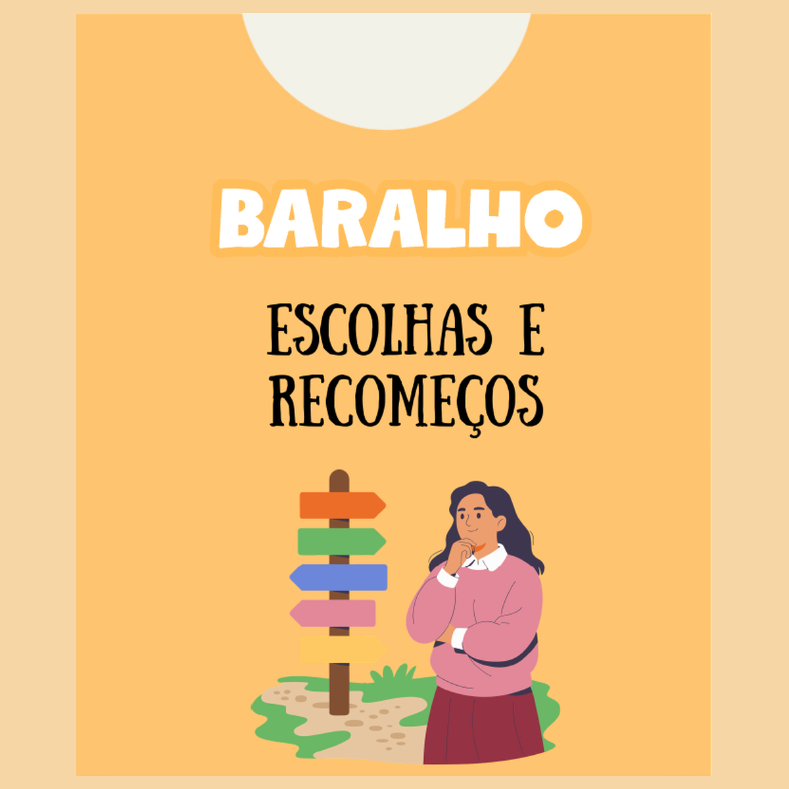
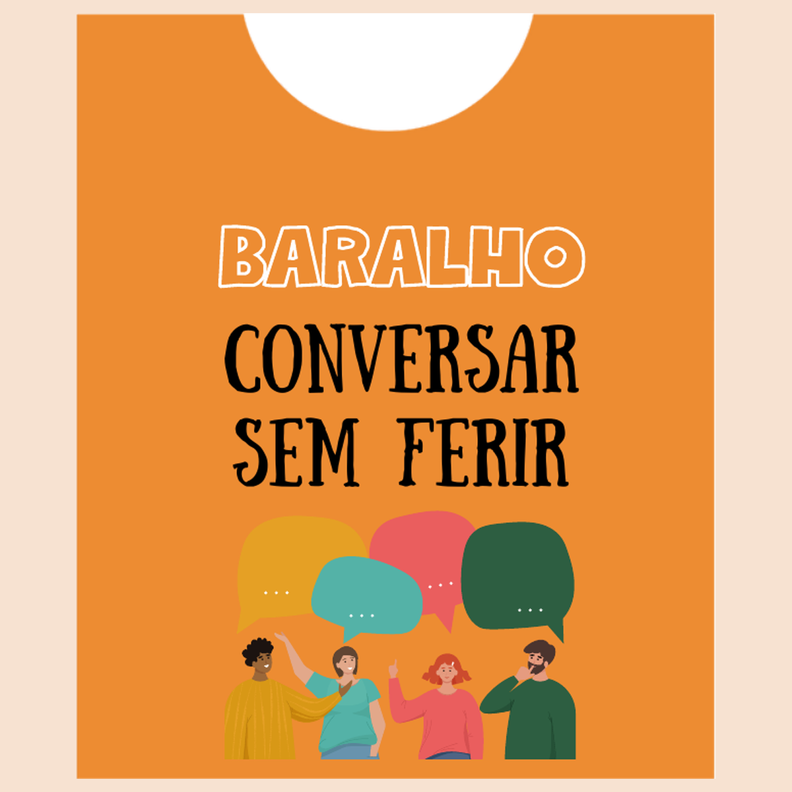
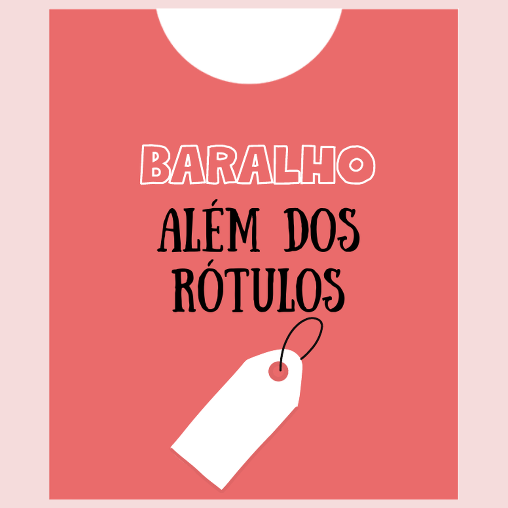
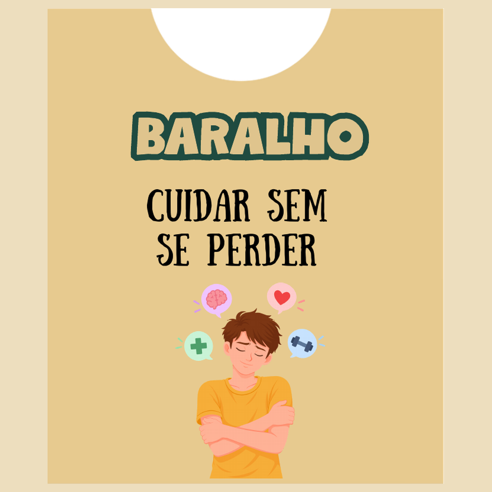

BARALHO · 24 CARTAS
Escolhas e Recomeços
Reflexões sobre escolhas, emoções, vínculos e caminhos possíveis.
CONHECIMENTO APOIO TRANSFORMAÇÃO
Produtos e conteúdos para profissionais, famílias e todas as pessoas que buscam informação confiável sobre álcool e outras drogas.
por Monica Sena
Conteúdos baseados
em evidências
Linguagem acessível
e humanizada
Mais conhecimento
para escolhas conscientes

Cuidar
também é
informar.
PRODUTOS EM DESTAQUE
Baralhos práticos e acolhedores para abrir conversas, refletir e construir caminhos de cuidado.

Reflexões sobre escolhas, emoções, vínculos e caminhos possíveis.

Comunicação assertiva e não violenta para familiares.

Diálogos sobre estigma, dignidade, pertencimento e novas possibilidades.

Limites, segurança, comunicação e autocuidado para quem cuida.
Checkout seguro via KiwifySeus dados protegidos
Pagamento facilitadoPix, cartão e boleto
Acesso imediatoApós a confirmação do pagamento
Conteúdos feitos por Monica SenaCom base em evidências e prática real
CONTEÚDOS PARA SALVAR
Artigos, reflexões e práticas para levar informação de qualidade para a vida real.
Explorar conteúdos →SOBRE O PROJETO
Cuidado em AD é um espaço de informação, apoio e transformação criado por Monica Sena. Cada material nasce do compromisso com uma comunicação clara, responsável e humana.
Fale com a gente →